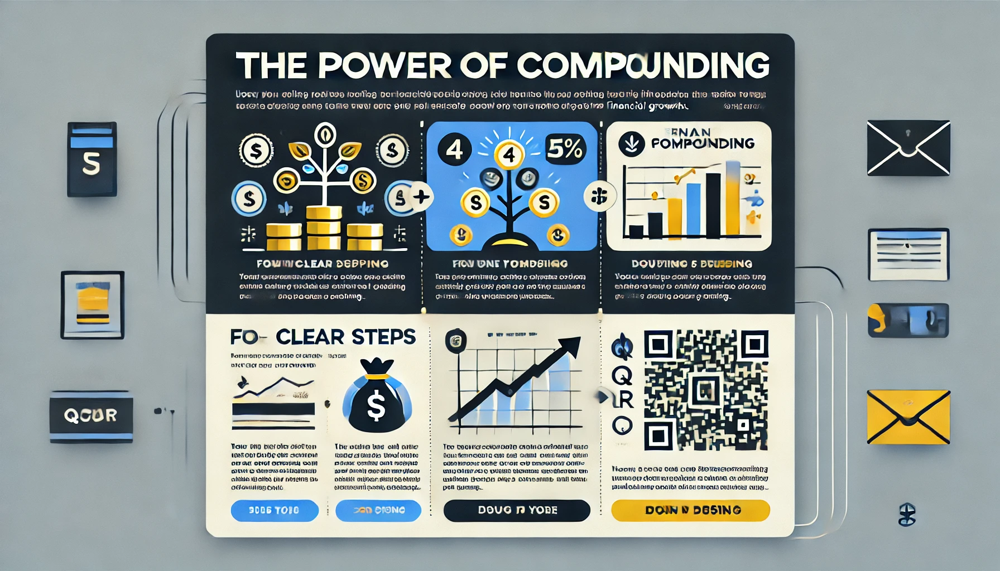

Recently, I received an email from ICICI Prudential Life Insurance Company Limited. What immediately caught my attention was the captivating use of the phrase "The Power of Compounding", a concept brilliantly explored in Morgan Housel's book The Psychology of Money. While the message resonated deeply, the user interface (UI) and visual design of the email didn’t match the appeal of its powerful content.
Here are a few suggestions to elevate the campaign's visual impact and improve its accessibility:
1. Existing Design: Key Observations
Why: The current email design attempts to convey a powerful financial message but could benefit from visual and accessibility improvements. While the design succeeds in certain areas, there are several aspects that reduce its overall effectiveness.
What:
Captivating Message: The phrase "The Power of Compounding" from The Psychology of Money by Morgan Housel is impactful and aligns well with the theme of wealth-building. However, the design doesn’t fully leverage this strong message.
UI Appeal: The existing design incorporates simple icons and clearly outlines the four steps, providing a structured and clear flow. It communicates the idea of compounding effectively.
Accessibility Issues: While visually appealing, the design doesn't address the needs of colorblind users. The reliance on orange and blue gradients can create readability problems for those with color vision deficiencies.
Cluttered Visual Real Estate: The large “Click to Watch Video” section occupies a significant portion of the layout, taking attention away from the core message and the four key steps. The “Dear Customer” greeting and continuing message also takes up significant space, contributing to visual clutter.
Clarity of the Four Steps: The four steps are outlined but obscured by background boxes that occupy too much space, reducing the overall clarity and visual impact of the message.
Typography and Readability: The small text combined with gradient backgrounds makes it harder to read, particularly on mobile devices. This compromises the overall user experience.
Weak Visual Hierarchy: The layout lacks a clear visual hierarchy, making it difficult for users to know where to look first. This reduces the effectiveness of the communication.
 email campaign
email campaign2. Suggestions for Improvement
Why: To enhance the user experience and the effectiveness of the campaign, the design needs to be both visually appealing and accessible. Making these changes will improve readability, engagement, and overall user experience.
What: Here are the improvements that will elevate the design:
a. Enhance Accessibility for Inclusivity
High-Contrast Color Scheme: Use high-contrast colors (such as orange and white) to ensure that text and visuals are easily readable. Patterned overlays can help distinguish sections clearly for colorblind users.
Simplified Color Palette: Limit the use of colors to ensure the design doesn’t feel overwhelming or distracting. A balance of orange, white, and black can maintain the brand identity while improving visual clarity.
b. Clearer Visualization of the Four Steps
Spacious Step Containers: Use larger, clearly defined boxes or cards for each step. Number them prominently and pair with simple icons to guide users through the process.
Sequential Layout: Arrange the four steps in a logical, easy-to-follow order. Use arrows or numbered blocks to emphasize the flow of information, helping the user digest the content step by step.
c. Visualizing Compounding Through Metaphors
Use compelling metaphors to make the concept of compounding tangible and relatable:
The Tree of Prosperity
The Coin Cascade
The Treasure Chest
The Growing Money Plant
The Time is Money Tree
d. Strengthen Call-to-Actions (CTAs)
Prominent CTAs: Design bold, high-contrast buttons for calls to action. Use clear and action-oriented text such as “Invest Now” or “Learn More”.
QR Code Visibility: Position the QR code in a separate section, with clear borders and labels to ensure easy scanning. The code should be large enough to be easily scanned on mobile devices.
e. Typography and Layout
Bold, Readable Fonts: Use larger, bold fonts for the headline and body text. Avoid excessive font styles to keep the design clean and readable.
Visual Hierarchy: Implement a Z-pattern layout, guiding the reader’s eye from top to bottom. Start with a headline, followed by the four steps, then the CTA and QR code.
f. Align with Brand Identity
Consistent Branding: Maintain the orange theme but balance it with complementary colors like white or black for a more refined look.
Iconography: Use simple, clear icons that are consistent across all steps to maintain a clean and professional aesthetic.
Design 2This is a preliminary design, providing some key cues for further refinement.
 Design 3
Design 33. Additional Tips for Visual Appeal
Why: The overall appeal of the email can be enhanced by creating an engaging, aesthetically pleasing design that also maintains clarity and user-friendliness.
What:
Vibrant Colors: Incorporate colors like gold, green, and blue to evoke feelings of prosperity and trust. Ensure these colors are accessible to users with color vision deficiencies.
High-Quality Images: Use high-resolution images that are crisp and clear to ensure they look great on all devices.
Minimalist Design: Keep the layout clean and uncluttered. Avoid unnecessary text and images that could distract from the core message.
Clear and Concise Messaging: Simplify the language to make the message easy to understand. Avoid jargon or overly complex financial terms.
Strong Call-to-Action: Make the CTA prominent and compelling, using phrases like "Invest Now" or "Start Your Journey Today".
Mobile-Friendly Design: Optimize the email design for mobile devices, ensuring it’s easy to read and navigate on smartphones and tablets.
A/B Testing: Continuously test different visuals, messages, and layouts to determine what resonates best with your audience.
4. Final Thoughts
Why: By improving the design and incorporating these suggested changes, ICICI Prudential can significantly enhance the user experience, drive higher engagement, and make the campaign more effective in communicating the power of compounding.
What: A well-designed email campaign is not just about aesthetic appeal—it’s about ensuring accessibility, guiding users through the content, and making the message more relatable through powerful visuals and metaphors.
How: By implementing these suggestions, including visual metaphors like the Tree of Prosperity and Coin Cascade, focusing on clear typography, and ensuring accessibility, the email will better align with ICICI Prudential’s brand and message. A refined design will make the campaign more engaging and easier to navigate, ensuring that the idea of compounding resonates with all readers.